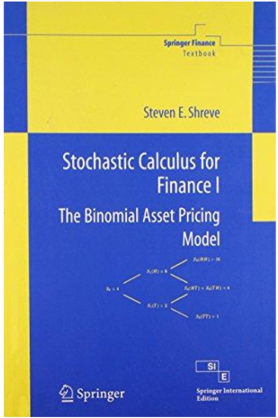
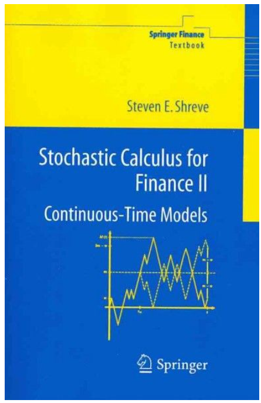

Restricted Access
I have been self studying real analysis and maybe stochastic calculus by this time. This page has my handwritten solutions to exercises to textbooks I have used, and so I cannot make it publically accessable (my answers are probably not even right haha...), so contact me if you want the password to see my progress.
Out of love for the rigorous and abstract thoery used in quantitative finance, I have been self studying real analysis and stochastic calculus using textbooks used in UCT's masters of financial engineering program. Below details my progress with my handwritten solutions to excersises and a dated study log.
Real Analysis — P. Ouwehand
Real Analysis — P. Ouwehand
Written Solutions By
chapter
1.1 Why we need axioms . . .
1.2 Arithmetic of Fields . . .
1.3 Ordered Fields . . .
1.4 The Continuum. . .
1.5 The Completeness Axiom . . .
2.1 Introduction. . .
Stochastic Calculus for Finance I — S. E. Shreve

Stochastic Calculus for Finance I — S. E. Shreve
Written Solutions By
chapter
Not yet started.
Not yet started.
Not yet started.
Stochastic Calculus for Finance II — S. E. Shreve

Stochastic Calculus for Finance II — S. E. Shreve
Written Solutions By
chapter
Not yet started.
Not yet started.
Not yet started.
5 May 2026
I have been continuing with real-analysis convergance of sequences. I
was so distrubed for a long time about if it is okay to use '>=' in place
of > if you are unsure. Yes you can apparently - '>' means '>=', but '>=' does
not mean '>'. One is simply a weaker statment.
I forgot how to factorize a cubic polynomial. For like 15 seconds.
4 May 2026
I was focsuing on convergance of sequences in real analysis today. I was suprised to find that I forgot so much about absolute values from first-year. I struggled to get my head around this "algorithm" when it comes to covergance, but I feel I am satified now. A sequence converges when we can find an algorithm for generating an N such that all values bigger than xN are smaller than any epsilon.
3 May 2026
Having finished the very first part of sequences and series of RA, the
definitions of infinitely often and eventually have just been presented to me.
I really like the formal notation, this is something that was not used in
engineering.
So cool to see the axiomatic foundations developed in chapter one being
used to show that a sequence converges.
The author briefly remarked a topological view of the definition of
convergance, and it is the coolest thing I have seen so far. The contraint
of defining distance is abandoned, and all we need is open sets.
2 May 2026
I Finally started with sequences and series in real analysis. The last questions from the first-chapter were quite challenging, and keeping the proofs cogent was hard. I also had to get a feel for when to use which axioms casually without explaining it. I reckoned that I need to focus on being rigorous about the concept being asked about, but should not accidentally derive all of algebra if the question is about completeness. The questions in the beginning of chapter two forced me to remember first-year and high school sequences and series. I was distrubed to find that the rationals are not closed when limits are introduced - i.e. a sequence of rationals can converge to an irrational, that was really cool to see.
24 April 2026
Worked through the completeness axiom and the Archimedean property today. What strikes me is how much weight the field axioms are carrying — I keep finding myself wanting to ask why they are the way they are, rather than simply accepting them as given. This has made me want to look at abstract algebra at some point, just to understand what is truly load-bearing in the structure of ℝ versus what is more contingent.
17 April 2026
Started the Ouwehand notes properly.
10 April 2026
First session. Set up this page. Emailed Professor Taylor, who was kind enough to share the notes used in FTX5058F and confirm that Shreve I and II are the primary references. Beginning with real analysis as a foundation before touching stochastic calculus - the plan is sequences and series first, then continuity, then into Shreve once the ε-δ machinery feels natural.